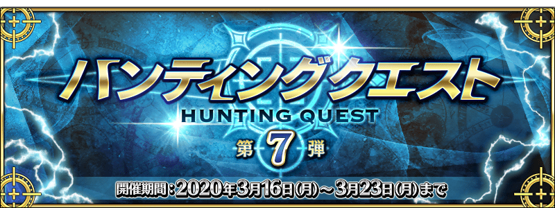
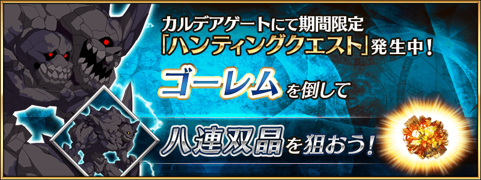
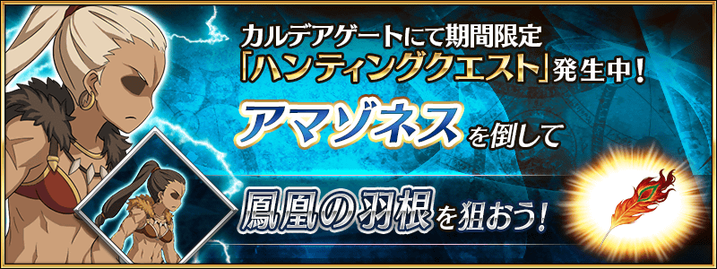

舉辦容易取得特定的技能強化＆靈基再臨素材的關卡「狩獵關卡」！
舉辦期間中，特定的敵人做為對象的狩獵關卡會依序在迦勒底之門出現。
關卡有準備3階段難易度，在各自的期間內皆能無數次挑戰。
另外，在初次通過時可獲得魔力稜鏡做為關卡通過報酬。
挑戰關卡以獲得技能強化＆靈基再臨素材做為目標吧！
◆舉辦期間◆
2020年3月16日(一) 17:00～3月23日(一) 11:59
◆參加條件◆
所有的御主對象
※新御主玩家必須推進至通過「特異點F 炎上汙染都市 冬木 第3節」。
3月16日(一) 17:00～3月17日(二) 16:59
3月17日(二) 17:00～3月18日(三) 16:59

3月18日(三) 17:00～3月19日(四) 16:59

3月19日(四) 17:00～3月20日(五) 16:59
3月20日(五) 17:00～3月21日(六) 16:59
3月21日(六) 17:00～3月23日(一) 11:59